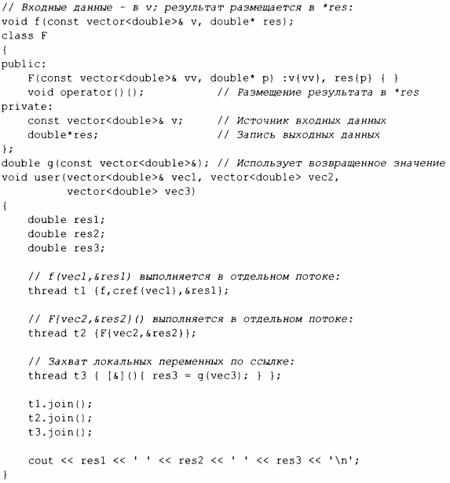

⇐15.3 Передача аргументов 15.5 Совместное использование данных⇒
В примере в § 15.3 я передаю аргументы по неконстантной ссылке. Я делаю это только в том случае, если ожидаю, что задание будет изменять значение указываемых данных (§ 1. 7). Это немного хитрый, но не столь уж редкий способ вернуть результат. Более понятный метод состоит в том, чтобы передать входные данные по константной ссылке, а также в качестве отдельного аргумента передать местоположение для размещения результата:
Этот способ работает: данная методика очень распространена, но я не считаю возврат результатов по ссылке особенно элегантным, поэтому возвращусь к этой теме в§ 15.7.1.